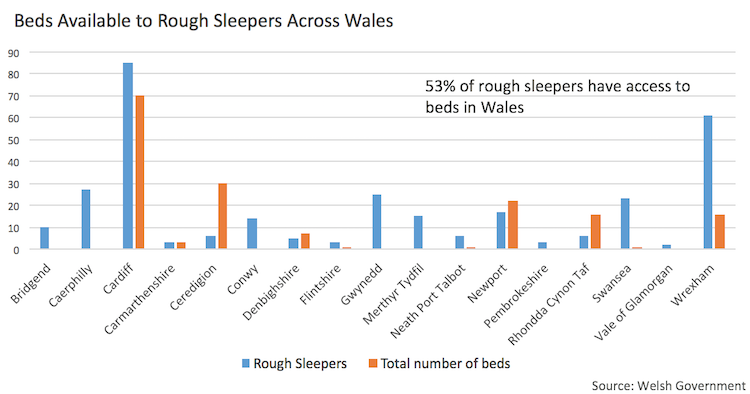
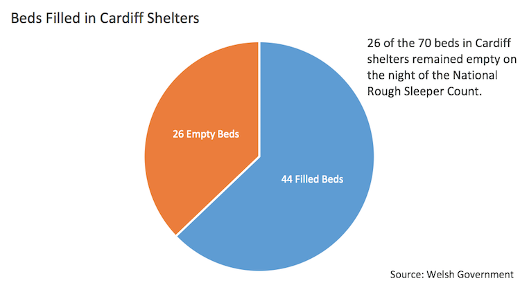

There are beds for only 80% of Cardiff’s rough sleepers.
Cardiff’s homeless shelters had only 70 beds available to an estimated 85 rough sleepers in 2017, according to data released by the Welsh Government.
The number of rough sleepers in Cardiff rose by 33% from 2016 to 2017, while the number of beds to accommodate the homeless has stayed the same.
There is “excellent work that is already taking place to prevent and tackle rough sleeping, but I acknowledge that there are still too many people living on the streets in Cardiff,” Councillor Susan Elsmore wrote in the introduction to the Cardiff Rough Sleeper Strategy 2017-2020.
According to this document, there are 45 beds for rough sleepers, with an extra 52 beds provided in winter months. However, the National Rough Sleeper Count conducted by the Welsh government in the same month as the report’s release showed only 70 available beds.
The lack of beds is not just an issue in Cardiff, only four councils in Wales have enough beds to accommodate all rough sleepers in their respective areas.
As part of Cardiff Council’s efforts to reduce rough sleeping, the Homeless Outreach Team goes out between 6 a.m and 9 p.m daily to engage with rough sleepers and those at risk of becoming rough sleepers. The team works with volunteer and charity organizations to provide support and advice, and encourage rough sleepers to enter a shelter.
According to the Council’s report, “engagement can be difficult and requires perseverance from staff to connect with and support the client.”
Third sector services, such as the Morning Breakfast Run, provided by The Wallich, The Salvation Army Bus Project, and Rainbow of Hope’s Paradise Soup Run, are grant funded by the Welsh Government and the Council, and work closely with the Homeless Outreach Team.
Despite these efforts, 37% of shelter beds in Cardiff remain available each night.
The cause of rough sleeping extends beyond a simple lack of beds. A case study conducted by Cardiff Council shows one rough sleeper, PJ, who chooses to keep living on the street because he finds life in accommodation provided to rough sleepers too chaotic.
The 2011 report, ‘Tackling Homelessness and Exclusion—Understanding Complex Lives’ by the Joseph Rowntree Foundation concluded “that people with complex needs are at serious risk of falling through the cracks in service provision, [and there] needs to be an integrated response across health, housing and social care.”
According to The Wallich, a dedicated homelessness charity, the Welsh Government plans to merge the Supporting Peoples funding, which is solely for helping the homeless, with other funding streams by 2019.
This could result in a £13 million reduction in funding overall, and risks the funding not being focused on the prevention and eradication of homelessness in Wales.
“We urge [the] Welsh Government to rethink these plans. Once the money is diverted away from services supporting society’s most vulnerable, it may be difficult to undo,” The Wallich said in a press release.
Despite the potential reduction in federal funding, Councillors in Cardiff are devoted to solving this problem. “I am committed to significantly reducing rough sleeping in the city and will continue to bring about effective change,” said Councillor Elsmore.
“Sleeping rough is dangerous and can damage people’s lives permanently. Life on the streets [has detrimental] impacts on physical and mental health, and wellbeing,” she explained.
The Council’s Housing Option Centre encourages Cardiff’s residents to report rough sleepers. Either by phone or email, provide the number of people, location, date and time, so the Homeless Outreach Team can be sent to help.